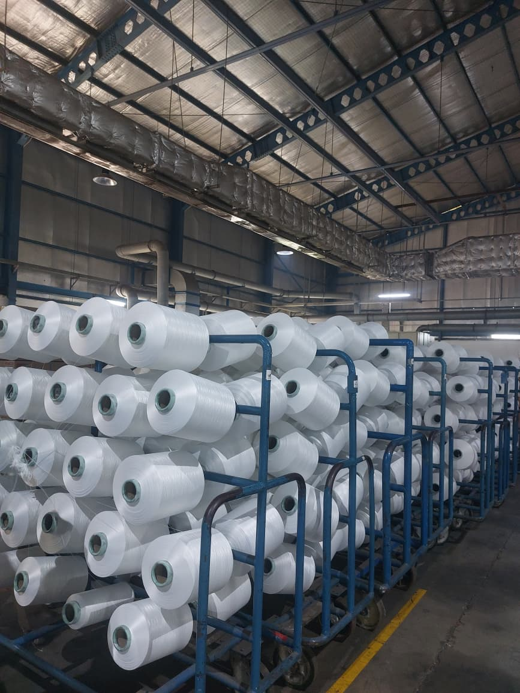
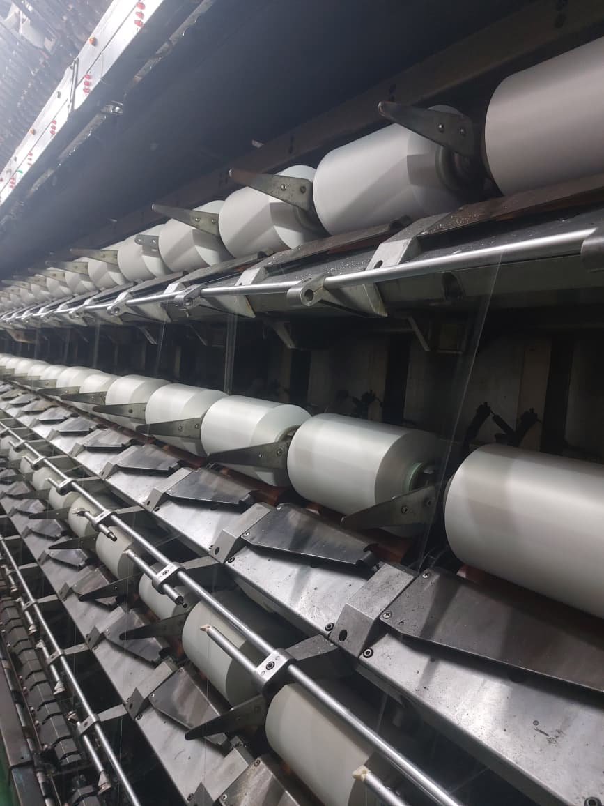
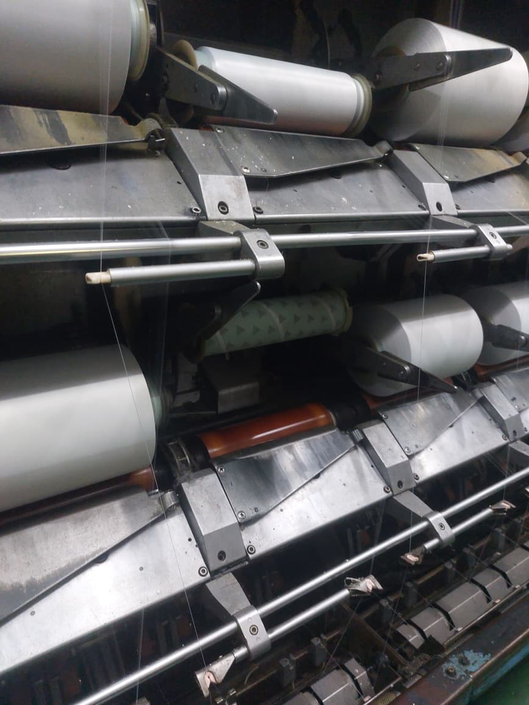
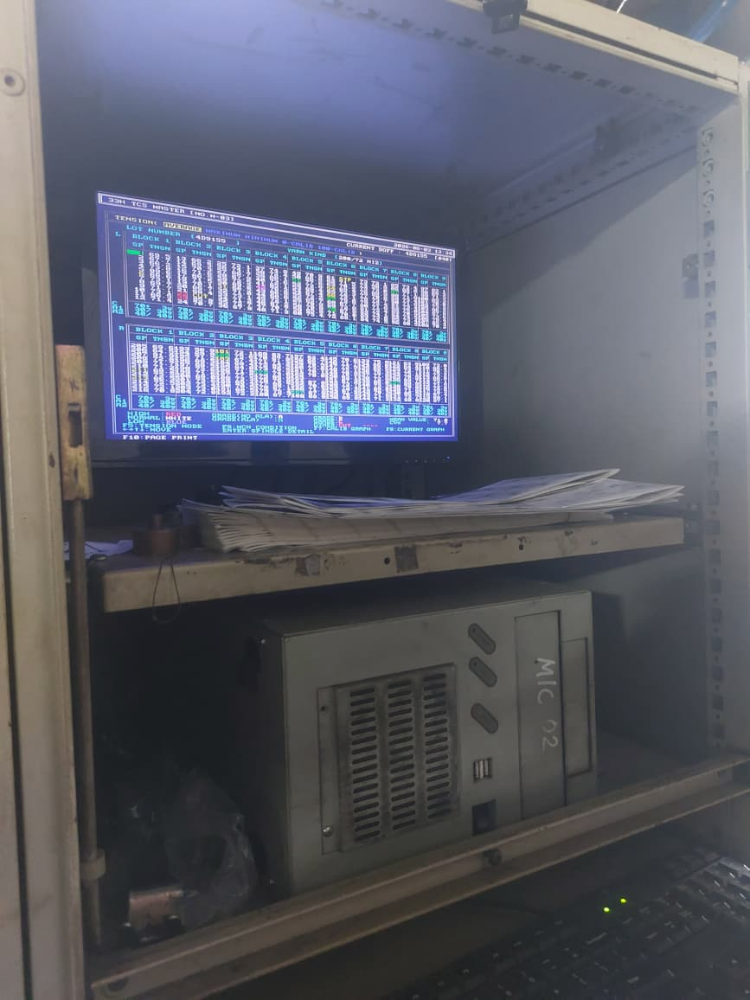
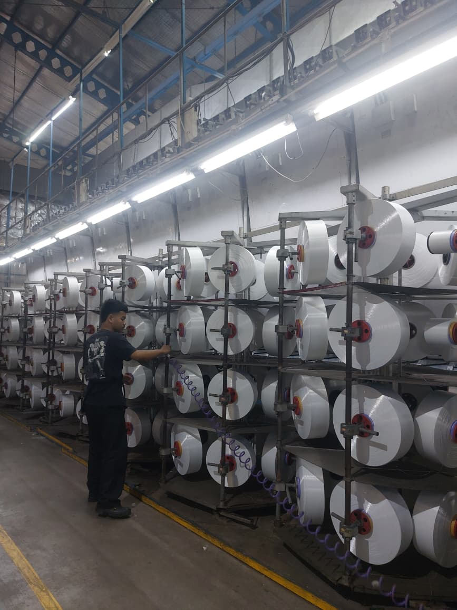
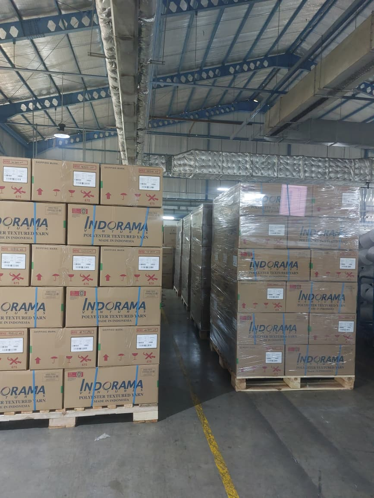

Media informasi dan edukasi mengenai alur proses industri tekstil modern, mulai dari pengoperasian mesin DTY, pengujian mutu, hingga penerapan keselamatan kerja.
Output Harian Rata-Rata
Berdiri Bersama PEI
Proses Produksi Nonstop

Benang poliester bertekstur mengembang hasil penarikan benang POY.



Unit produksi DTY ini dibangun bersamaan dengan pendirian Politeknik Enjinering Indorama (PEI) pada tahun 2013. Unit ini dirancang sebagai wujud sinergi nyata antara dunia pendidikan vokasi dengan dunia industri tekstil, bekerja sama dengan PT Indorama Synthetics.
Tujuan utama pendirian unit ini adalah untuk memberikan wadah pelatihan dan pengalaman praktis langsung bagi mahasiswa dalam memahami seluruh aspek industri tekstil modern secara real-time—termasuk pengoperasian mesin produksi otomatis, proses kontrol kualitas produk, hingga standar keselamatan kerja industri global.
Unit DTY ini beroperasi selama 24 jam nonstop (kecuali saat periode pemeliharaan mesin) dengan rata-rata output produksi mencapai 3 ton per hari. Hasil produksi berupa benang DTY didistribusikan untuk kebutuhan pasar domestik maupun ekspor.
Proses pengolahan benang DTY terdiri dari 8 tahapan terintegrasi dengan kontrol kualitas yang ketat sesuai referensi lapangan.
Proses dimulai dengan menyiapkan bahan baku berupa benang POY yang diperoleh dari proses spinning. Benang mentah ini bersifat licin, lurus, belum berwarna, dan belum diberi tekstur.

Bahan baku utama adalah benang poliester Partially Oriented Yarn (POY). Benang ini memiliki susunan rantai molekul yang baru terorientasi sebagian, sehingga belum memiliki kekuatan tarik yang stabil dan tekstur mengembang yang dibutuhkan untuk produk kain pakaian.
Gulungan benang mentah POY dipasang pada rak mesin khusus DTY. Setiap posisi produksi menggunakan 12 gulungan aktif yang sedang berjalan dan 12 gulungan cadangan untuk menjaga kelancaran pasokan benang tanpa menghentikan mesin.
Gulungan POY ditempatkan pada rak benang (Creel). Sistem cadangan (reserve package) disambung ujungnya ke pangkal gulungan aktif menggunakan metode knotting khusus, sehingga ketika gulungan aktif habis, benang cadangan langsung terumpan secara otomatis tanpa membuat mesin berhenti bekerja.
Benang ditarik melewati silinder pemanas, dipuntir (diplintir), lalu didinginkan menggunakan plat pendingin pada Mesin Murata. Kombinasi panas dan puntiran mekanis ini membentuk struktur benang menjadi berombak dan elastis.
Metode yang digunakan adalah False Twist Texturing. Benang melewati First Heater (suhu 180°C - 210°C) untuk pelunakan termal, dipuntir menggunakan friction disc, kemudian dilewatkan pada Cooling Plate sepanjang ±1 meter untuk menstabilkan bentuk heliks (spiral) serat sebelum puntiran dilepas.
Benang poliester yang telah bertekstur (kini menjadi benang DTY) ditarik keluar dari zona pemuntiran dan digulung kembali secara otomatis oleh mekanisme penggulung mesin ke tabung kertas khusus.
Benang dikendalikan oleh sistem rol penarik (Delivery Roller) dan dipantau oleh sensor ketegangan online (Online Tension Monitor). Sensor mendeteksi variasi ketegangan untuk mendeteksi filamen putus (broken filaments) sebelum benang masuk ke bagian Take-up winder untuk digulung pada paper cone.
Setiap sampel gulungan diuji melalui proses merajut (knitting) menjadi lembaran kain contoh, lalu dicelup dengan pewarna. Proses ini bertujuan memastikan kemampuan penyerapan warna benang seragam dan tidak belang.
Pengujian celup rajut (knit-dyeing test) dilakukan di laboratorium pengujian mutu untuk mendeteksi variasi penyerapan warna (barré). Sampel benang dirajut menggunakan mesin rajut bundar skala kecil, dicelup dengan zat warna dispersi, dan dievaluasi secara visual di bawah cahaya standar industri.
Berdasarkan berat gulungan, hasil uji celup rajut, serta ada tidaknya cacat fisik visual, gulungan benang diklasifikasikan ke dalam tingkatan mutu atau Grading tertentu, yaitu grade AX, A, B, dan C.
Grading standar kualitas benang di unit produksi: Grade AX/A merupakan kualitas prima bebas cacat visual dan lulus uji celup. Grade B merupakan kualitas dengan toleransi cacat ringan. Grade C merupakan kualitas dengan cacat visual signifikan atau tidak lulus uji kerataan warna. Produk di bawah standar (off-grade) diturunkan gradenya atau tidak didistribusikan.
Gulungan benang DTY yang telah lolos inspeksi dikemas secara rapi menggunakan kantong plastik pelindung. Hasil produksi dari satu unit mesin biasanya ditata pada rak troli besi khusus yang memuat sekitar 216 gulungan (setara dengan 4 troli).

Setiap bobbin benang DTY dibungkus dengan plastik PE pelindung secara manual atau semi-otomatis untuk mencegah kontaminasi debu dan kelembapan. Gulungan ditata pada pin troli transportasi internal pabrik guna menghindari benturan fisik pada permukaan gulungan benang.
Produk akhir yang telah dikemas kemudian dipindahkan ke area logistik. Benang siap dikirim ke gudang penyimpanan PT Indorama Synthetics maupun langsung didistribusikan ke pabrik-pabrik tekstil pembuat kain.
Pengiriman logsitik dikendalikan melalui koordinasi sistem ERP pergudangan PT Indorama Synthetics. Gulungan benang ditransfer ke kotak karton box standar ekspor atau ditumpuk pada palet besi untuk pengiriman domestik menggunakan armada truk pengangkut.
Unit DTY PEI memadukan aktivitas manufaktur harian dengan perannya sebagai sarana edukasi praktis bagi institusi pendidikan.
Fasilitas produksi ini terbuka bagi kunjungan dari berbagai institusi pendidikan (seperti SMA/SMK dan perguruan tinggi lain) yang bertujuan memperkenalkan alur operasional industri tekstil modern secara langsung.
Mahasiswa Politeknik Enjinering Indorama (PEI) secara berkala dilibatkan langsung di lapangan untuk mempraktikkan teori pemrosesan benang, pengoperasian mesin otomatis, pengawasan produksi, serta evaluasi mutu laboratorium.
Siswa dan mahasiswa belajar mengenali cara kerja komponen mekanik otomatisasi pada mesin DTY Murata, membaca indikator ketegangan benang terkomputerisasi, dan menangani gangguan produksi di bawah pengawasan instruktur pabrik.
Glosarium istilah teknis seputar pembuatan benang DTY dengan penjelasan sederhana untuk membantu pemahaman pembaca umum.